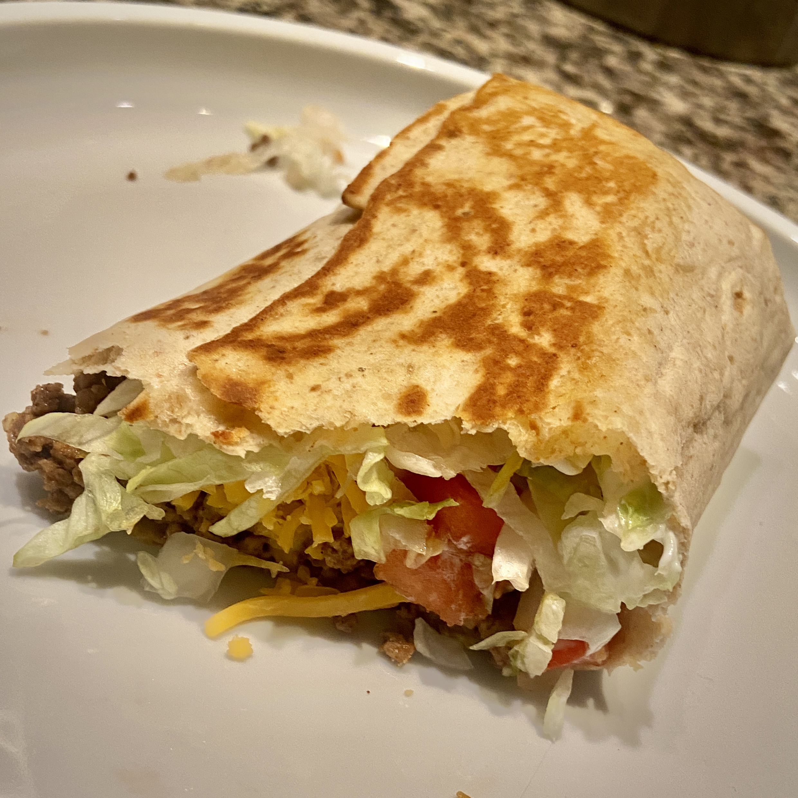

Pressed Beef Burrito
Calories 434

Decription
In a perfect world, one would be able to eat Taco Bell whenever they wanted and not feel bad about their life decisions.
With this recipe you can eat like a Taco Bell king!
Macros
- Carbs 21g
- Fat 16.3g
- Protein 56.8g
Ingredients
- 1 Joseph's Lavash Bread
- 6 oz 93% Lean Ground Beef
- 1/4 cup Fat Free Shredded Cheddar Cheese
- 1 TBSP Daisy Light Sour Cream
- 10g of Onions
- Shredded Lettuce
- Chopped Roma Tomato
- 1 TBSP La Victoria Taco Sauce
Steps
Home